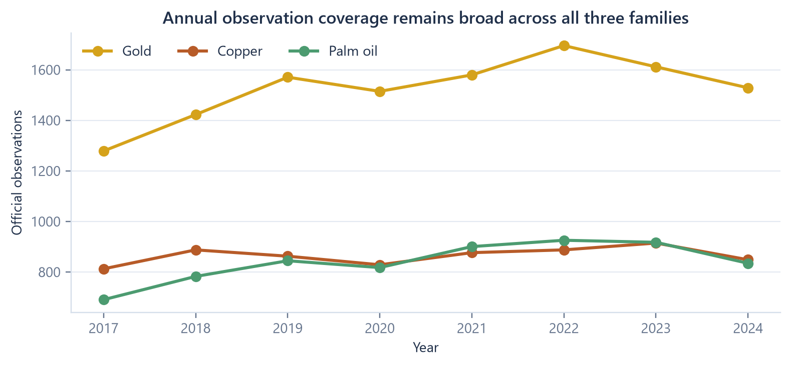
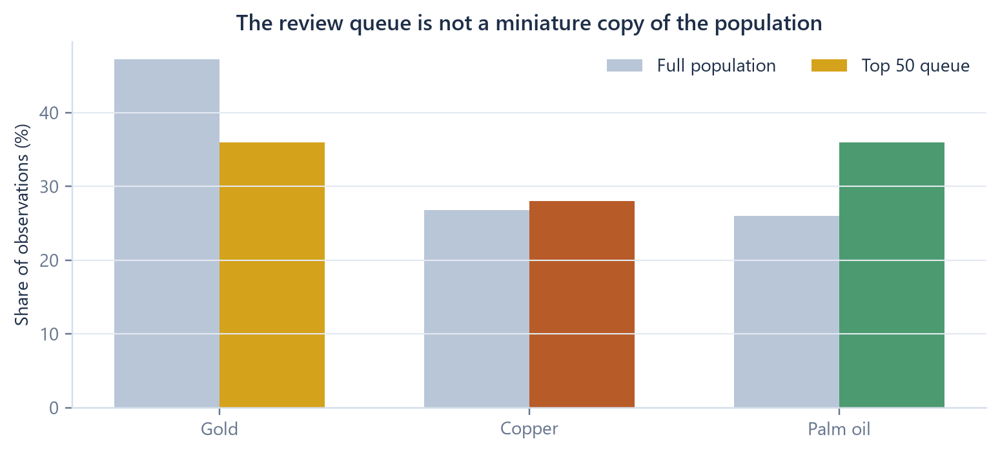
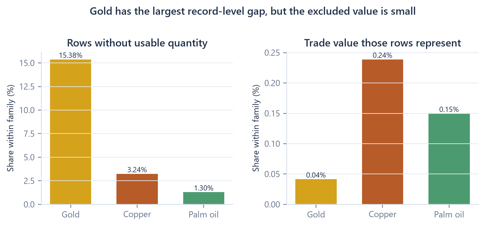
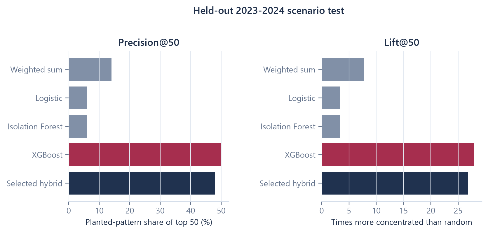
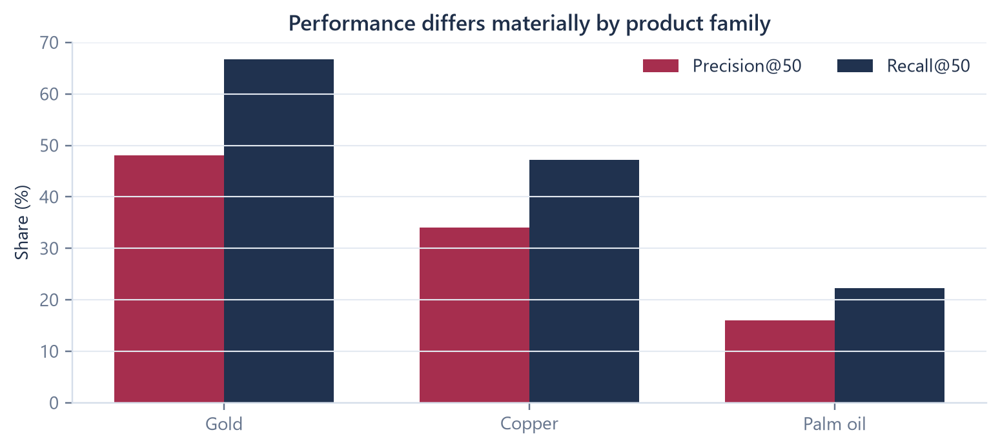
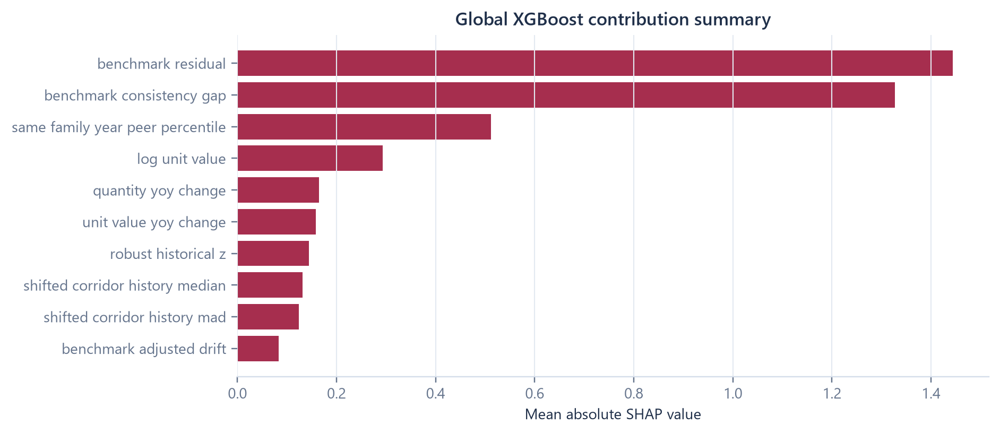
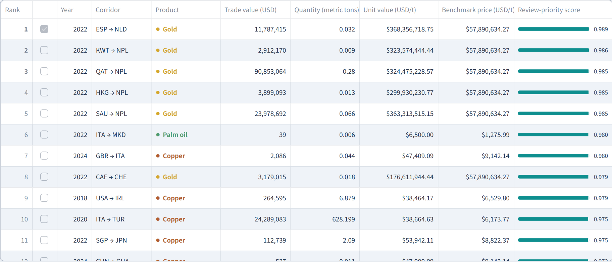
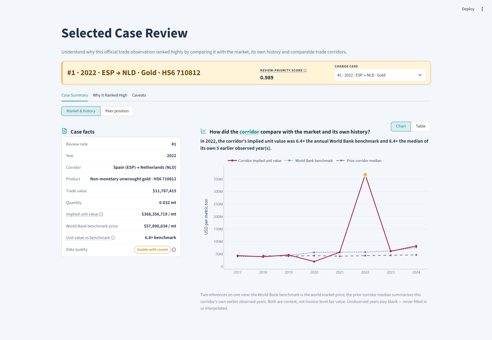

A technical account of how official public trade data is transformed into a ranked queue of unusual corridor-product-year patterns for accountable human review.
Version: 1.0
Generated: 23 July 2026
Source commit: 774aac6 on develop
Analytical release: official-data-simplified-v1
Implemented offline analytical pipeline
Deployed read-only Streamlit dashboard
Future state bank-data integration
Human-review boundary. This output prioritises an unusual corridor-product pattern for human review. It does not establish money laundering, misinvoicing, or criminal intent.
This companion is the technical layer beneath the stakeholder project brief and live dashboard. It documents the current repository implementation rather than a proposed target architecture.
| Control item | Current record |
|---|---|
| Purpose | Explain the implemented data, analytical, modelling, evidence, dashboard, deployment, and control design |
| Intended audience | Data and analytics practitioners; AFC/AML stakeholders; model-risk reviewers; wholesale-banking technology stakeholders |
| Implementation version | official-data-simplified-v1 |
| Source commit | 774aac6 (develop) |
| Analytical period | 2017-2024 |
| Trade dataset | CEPII BACI HS17 release 202601, filtered to three HS6 products |
| Benchmark dataset | World Bank Commodity Markets annual workbook, 24 family-year rows |
| Deployment status | Public-data, read-only dashboard hosted on Streamlit Community Cloud |
| Owner | Jesslyn Guo Baolin |
| Related document | stakeholder_project_brief_v2.pdf |
Code or configuration exists in the repository.
An artefact is produced by a pipeline stage.
A check or test has executed against the current build.
Design intent only; not part of the current application.
Every retained metric in this document was checked against current generated outputs or recomputed from current processed data. The working claim-source map is included with the document build at reports/technical_companion/technical_companion_claim_source_map.csv.
docs/afc_aml_technical_companion.pdf. This revision is a separate generated artefact.Select a section to jump to its technical narrative.
The project addresses a prioritisation problem. Public trade data contains thousands of annual country-to-country product observations, but no confirmed TBML labels and no customer, invoice, shipment, payment, or ownership records. The implemented system therefore ranks unusual analytical patterns for review; it does not classify financial crime.
One row is one exporter-importer-HS6-year aggregate. The selected method scores the 23,656 rows with positive trade value and usable quantity, sorts them deterministically, persists the Top 50, and attaches four evidence checks to each queued observation.
The analytical pipeline runs as separate Python stages and writes Parquet, CSV, JSON, joblib, report, and figure artefacts. The Streamlit application loads those generated files, caches them, applies interactive filters, persists the selected case in session state, and renders charts and tables. It does not rebuild the panel, inject scenarios, retrain models, or write data.
| Boundary | Technical consequence |
|---|---|
| Annual public aggregates | A unit value is an implied annual average, not an invoice price |
| World Bank benchmark | Used as market context, not corridor-specific fair value |
| FATF-Egmont publications | Used for typology language and questions, never as features or labels |
| No confirmed cases | Controlled scenarios evaluate ranking behaviour; they are not ground truth |
| Missing quantity | Row cannot form unit value and remains outside model scoring |
| Score semantics | Hybrid score determines ordering only; it is not calibrated |
| Global SHAP only | Explains aggregate XGBoost contribution, not an individual case |
This output prioritises an unusual corridor-product pattern for human review. It does not establish money laundering, misinvoicing, or criminal intent.
00_check_environment.py → 01_verify_sources.py → 02_ingest_official_sources.py03_build_panel.py → 04_build_features.py → 05_build_scenarios.py → 06_train_evaluate_models.py07_build_evidence.py → 08_build_briefs.py → 09_generate_reports.pydashboard/streamlit_app.py reads committed outputs; GitHub-connected Streamlit Cloud starts the app.Figure 1. Technical lifecycle from verified public sources to a deployed, read-only review dashboard.
raw_baci_selected.parquet; worldbank_commodity_benchmarks.parquetcorridor_product_year_panel.parquet; corridor_features.parquettop_ranked_corridors.csv; evidence_table.csv; deterministic briefsscenario_panel.parquet preserves the panel schemascenario_labels.parquet remains physically separatescenario_features.parquet uses the same feature builderThe canonical analytical key is year + exporter_iso3 + importer_iso3 + hs6. obs_id is a stable hash-derived observation identifier, while source_row_id links the prepared row back to the filtered BACI source. Evidence rows add their own evidence_id.
build_features() function. This reduces train-versus-runtime drift; labels are joined only inside model fitting.Figure 2. Separate official and evaluation-only data tracks share transformations without sharing scenario labels.
| Artefact | Grain / rows | Created by | Main consumer | Purpose |
|---|---|---|---|---|
raw_baci_selected.parquet |
source row / 25,844 | stage 02 | stage 03 | Normalised raw fields and source IDs |
worldbank_commodity_benchmarks.parquet |
family-year / 24 | stage 02 | stage 03 | Annual benchmark context |
corridor_product_year_panel.parquet |
corridor-product-year / 25,844 | stage 03 | stages 04-05; dashboard | Canonical prepared panel |
exclusion_audit.csv |
caveated or excluded row / 13,950 | stage 03 | controls; dashboard | Explicit quality and exclusion record |
corridor_features.parquet |
official observation / 25,844 | stage 04 | stages 06-07; dashboard | Time-safe analytical signals |
scenario_panel.parquet |
copied panel / 25,844 | stage 05 | stage 06 | Controlled transformations only |
scenario_labels.parquet |
observation / 25,844 | stage 05 | stage 06 | Split, scenario ID, positive and hard-negative labels |
model_scores.csv |
eligible scenario row / 23,656 | stage 06 | evaluation page | Candidate and hybrid scores |
model_comparison.csv |
split-family-model / 40 | stage 06 | model review; dashboard | Ranking metrics |
top_ranked_corridors.csv |
official queue / 50 | stage 06-07 | dashboard | Persisted review order |
evidence_table.csv |
evidence check / 200 | stage 07 | case page; briefs | Recomputable case facts |
analyst_briefs.json |
brief / 5 | stage 08 | reporting reference | Deterministic, caveated top-case briefs |
Required dashboard files fail visibly if absent. Optional files return a labelled empty state; the application never substitutes demo data.
v is multiplied by 1,000 to obtain current USD.q is retained in metric tons.BACI reports value in thousands of current USD.
The selected BACI quantity is already reported in metric tons.
Calculated only when value and quantity are positive.
Converts USD/troy ounce to USD/metric ton.
data_quality_score ranges from 0 to 6: one point for valid quantity, two for a matched benchmark, up to two for history depth, and one for core-field completeness. The status is assigned separately:
Role: annual bilateral trade facts.
Value and quantity by exporter, importer, year, and HS6 product.
Official-derived filtered extract; annual aggregates, not transactions.
Role: broad market-price context.
Annual palm-oil, copper, and gold benchmark series.
Not corridor-specific landed price or invoice fair value.
Role: typology language, caveats, and review questions.
Published 2020 trends and 2021 risk-indicator references.
Never a feature, label, or row-level fact.
High-volume bulk commodity with a usable annual benchmark. It tests behaviour around established physical flows.
Industrial metal with a widely followed market reference. It tests benchmark-relative movement.
Compact, high-value product relevant to TBML typologies. The code excludes powder and does not reveal purity, form, or contract terms.
The families deliberately vary in volume, value concentration, market structure, and benchmark scale. That variation makes family-level evaluation necessary: a method that works well for gold may not behave the same way for palm oil.

Figure 3. Official row coverage by year and family. Source: current corridor-product-year panel.
The panel contains 25,844 annual observations: 12,205 gold, 6,922 copper, and 6,717 palm-oil rows. Annual coverage ranges from 2,783 rows in 2017 to 3,510 in 2022. The chart describes record availability, not suspiciousness.
| Family | Official rows | Trade value | Share of scoped value | Main interpretation |
|---|---|---|---|---|
| Gold | 12,205 | USD 2.851tn | 81.01% | Value-weighted totals are dominated by gold |
| Copper | 6,922 | USD 573.3bn | 16.29% | Industrial benchmark context is material |
| Palm oil | 6,717 | USD 95.1bn | 2.70% | High physical quantity, lower value share |
The profiling notebook also showed large within-family dispersion in implied unit value. That observation motivates log transformations, robust prior-history comparisons, same-year peer positioning, and explicit caveats for small quantities.

Figure 4. Product-family composition in the full panel and the selected official queue.
The Top 50 contains 18 gold, 18 palm-oil, and 14 copper observations. Palm oil is therefore more prominent in the queue than in the full row population, while gold is less dominant by count than it is by value.
usable_with_caveat; the common reason is a retained valid extreme or limited history, not missing quantity.The queue is a triage surface, not a prevalence estimate. Its composition must not be interpreted as a claim that one product, year, or country is riskier.

Figure 5. Missing quantity is large by record count in gold but small by reported trade value.
Gold has 1,877 rows without usable quantity, 15.38% of gold records. Those rows represent USD 1.183bn, only 0.04149% of gold value. This is why the analysis is a coverage control rather than an anomaly story: a meaningful share of records cannot be assessed, but almost all reported value remains covered.
One 2024 United Arab Emirates-to-Thailand row accounts for 70.9% of excluded gold value, but quantity is usable in the other seven years of that route. Separately, 14 routes are present in every year from 2017 to 2024 and lack usable quantity in every year. Twelve touch the Netherlands, yet all 14 together carry only USD 1.0m, or 0.08455% of excluded gold value.
Financially prominent within the excluded subset; best treated as a source-record check, not a route-wide conclusion.
Operationally traceable because the same routes repeat; not financially material and not a country-risk signal.
Missing quantity is retained for audit, monitored separately, and never converted into review priority.
The current model input list contains 22 fields. Some are direct or transformed values; others encode history, peers, benchmark movement, corridor status, missingness, and data quality. All are calculated at the corridor-product-year grain.
Compresses the highly skewed unit-value scale. Undefined when value or quantity is non-positive.
Positive values sit above the annual family benchmark; negative values sit below it.
The residual is a log ratio. A residual of zero means parity with the benchmark; it does not mean “no risk”. The benchmark is a broad market reference and does not observe freight, purity, grade, contract terms, timing, or re-export effects.
missing_quantity_flag, missing_benchmark_flag, missing_history_flag, and missing_country_mapping_flag preserve data limitations for modelling and audit. Model eligibility still requires a valid unit value, so missing quantity rows do not enter fitted or official scores.
For each corridor_id + hs6, prior log unit values are accumulated in year order. The current row is excluded before the median and median absolute deviation (MAD) are calculated.
The implementation uses the unscaled MAD, not the normal-consistency factor 1.4826. If prior MAD is zero or smaller than 1e-9, the denominator becomes 0.05. If no prior median exists, the robust z-score remains missing. This can produce large values for short, low-dispersion histories, so history depth is always shown as a caveat.
The percentile ranks the row’s benchmark residual among all corridors in the same family and year. Same-year peers are available at assessment time, so this comparison is time-safe even though it is not prior-only.
For the previous observed row in the same corridor and HS6 group:
This convention produces trade_value_yoy_change, quantity_yoy_change, and unit_value_yoy_change. The “previous” observation is the prior available row, not necessarily the immediately preceding calendar year.
Shows whether value changed faster than reported physical quantity.
Shows whether the corridor's gap to the market benchmark changed.
Near zero means corridor unit value moved similarly to the market.
`corridor_activity_history` counts earlier appearances. `novelty` marks the first. `reactivation` marks a return after a gap of more than one year.
valid_extreme_flag records unit value above five times or below 0.2 times the benchmark after basic validity checks. It is a caveat-bearing analytical flag, not proof of mispricing.
| Feature family | Time-safe reference | Weighted sum | ML | Evidence/dashboard |
|---|---|---|---|---|
| Unit value and logs | current row | indirect | yes | yes |
| Prior median, MAD, robust z | prior observations only | yes | yes | yes |
| Same-year peer percentile | same family and year | yes | yes | yes |
| YoY log changes and divergence | previous observed row | yes | yes | yes |
| Benchmark residual and drift | current benchmark; prior residual | yes | yes | yes |
| Novelty and reactivation | prior activity count/year | yes | yes | yes |
| Missingness and quality | current data state | reduction / eligibility | yes | yes |
Figure 6. Feature construction timeline. The current row can use prior history and contemporaneous market context, never future years.
Public BACI rows have no confirmed TBML outcome. The project therefore evaluates ranking behaviour on a frozen copy of the clean panel with controlled transformations.
Unchanged public rows are feature-engineered and scored after model selection.
540 selected rows are modified on a test copy: 108 positives and 72 hard negatives in each split.
| Evaluation role | Scenario | Controlled change |
|---|---|---|
| Positive | Over-valuation | Value multiplied 2.2-3.5×; quantity held |
| Positive | Under-valuation | Value multiplied 0.25-0.45×; quantity held |
| Positive | Low volume, high value | Value rises 1.8-2.8×; quantity falls to 0.35-0.65× |
| Hard negative | Benchmark-consistent movement | Unit value aligned with the family-year median benchmark residual |
| Hard negative | Proportional growth | Value and quantity multiplied by the same factor |
Scenario IDs and labels live in scenario_labels.parquet, not in the scenario panel or feature table. Forbidden label-like fields are explicitly rejected by build_features().
Nine signals are first normalised to the range 0-1 using fixed reference values. Their documented points are added, then two reductions are subtracted.
| Positive component | Weight | Reference / construction |
|---|---|---|
| Prior-history deviation | 0.20 | abs(robust_z) / 4, clipped |
| Benchmark residual | 0.18 | abs(residual) / 1, clipped |
| Benchmark-adjusted drift | 0.18 | abs(drift) / 0.70, clipped |
| Unit-value movement | 0.12 | abs(unit-value change) / 0.80, clipped |
| Value-quantity divergence | 0.12 | abs(divergence) / 0.80, clipped |
| Peer-tail position | 0.10 | distance from percentile 0.5, doubled |
| New corridor | 0.06 | binary |
| Reactivated corridor | 0.08 | binary |
| Valid extreme | 0.14 | binary |
0.15 × (1 - clip(gap / 0.35)). A small gap means unit value moved similarly to the market, so more is subtracted. Once the gap reaches 0.35, the reduction falls to zero.
0.08 × (6 - quality score) / 6. A quality score of 6 subtracts zero. Lower usable scores subtract progressively more. Ineligible rows are never scored.
The weighted sum is auditable but not statistically fitted. Its weights express documented review priorities; they do not estimate causal importance or probability.
A linear benchmark for whether a simple learned combination is sufficient.
Captures nonlinear interactions between the 22 input fields.
Unsupervised outlier reference, not selected for the official queue.
Provides an inspectable review logic and the transparent component of the hybrid.
max_depth=2, learning_rate=0.06, min_child_weight=2, and reg_lambda=4 produced validation average precision 0.3860, the best of three deliberately bounded configurations. The seed is 20260117; training uses 2017-2020 only.
The supervised challenger is chosen on 2021-2022 validation average precision. XGBoost wins. Three predefined blends then compete on validation precision@50.
| XGBoost weight | Weighted-sum weight | Validation precision@50 | Recall@50 | AP | Hard-negative FPR |
|---|---|---|---|---|---|
| 0.75 | 0.25 | 0.46 | 0.213 | 0.309 | 0.0139 |
| 0.50 | 0.50 | 0.32 | 0.148 | 0.264 | 0.0139 |
| 0.25 | 0.75 | 0.26 | 0.120 | 0.199 | 0.0139 |
Standalone XGBoost later scores slightly higher than the hybrid on held-out test precision@50, 0.50 versus 0.48. The hybrid remains selected because changing the method after seeing test results would turn the test into another selection set.
Share of the top queue that contains planted positive patterns.
Share of all planted positives recovered in the top queue.
Concentration relative to random selection from the evaluated split.
Average precision summarises ranking quality across thresholds. Hard-negative false-positive rate is the share of planted benign look-alikes that enter the Top 50. Ordinary false-positive rate uses all remaining negative rows and is reported as a diagnostic, not as a real-world false-alert rate.

Figure 7. Held-out 2023-2024 controlled-scenario results. These are scenario-test metrics, not crime-detection rates.
The selected hybrid places 24 planted positives in its Top 50: precision 0.48, recall 0.2222, lift 26.81, average precision 0.29785, and hard-negative false-positive rate 0.0.

Figure 8. Family-level Top-50 metrics use a separate Top 50 within each product family; they are diagnostic and do not describe the mixed official queue.
The hybrid’s held-out family results differ: gold precision@50 is 0.48 with recall 0.667; copper is 0.34 / 0.472; palm oil is 0.16 / 0.222. The comparison shows heterogeneity, but each family has only 36 planted positives per split. It is evidence for monitoring family behaviour, not for declaring one commodity intrinsically easier or riskier.

Figure 9. Mean absolute SHAP values for the XGBoost challenger. Magnitude shows average model contribution, not direction, causality, or case evidence.
Benchmark residual and benchmark-consistency gap dominate the global XGBoost summary, followed by same-family-year peer percentile and log unit value. This explains what the learned challenger uses most across scenario rows.
After selection, the fitted models and fixed weighted sum return to corridor_features.parquet. Only rows with valid unit value and an eligible quality status are scored.
obs_id is a deterministic tie-breaker.
Figure 10. Current live queue capture. Filters re-slice loaded rows; the CSV export retains full precision and rank order.
The dashboard exposes rank, year, corridor, product, trade value, quantity, implied unit value, annual benchmark price, and review-priority score. Exporter and importer filters display country names while preserving ISO3 values.
Rank reflects analytical ordering within this product and period scope. It is not a country-risk judgement, customer rating, or probability.
Stage 07 converts the Top 50 into 200 evidence rows, exactly four per case. Candidate evidence types include history deviation, annual unit-value change, benchmark-adjusted drift, benchmark gap, and value-quantity divergence. The four strongest qualifying checks are retained.
Each evidence row carries:
evidence_id, obs_id, source table, and source row ID;
Figure 11. Current selected-case capture for rank 1: Spain to Netherlands, non-monetary unwrought gold, 2022.
The case page combines facts, market and corridor history, same-year peers, actual feature values, evidence cards, and limitations. Runtime checks reconcile chart and table values before display. Five deterministic analyst briefs are built from evidence IDs and pass citation, caveat, source, prohibited-language, and conclusion-boundary gates.
streamlit_app.pyPage config, hidden router, custom navigation, boundary footer.app_pages/Nine stakeholder pages plus the welcome route.components/Cards, charts, tables, filters, icons, styles, banners.services/Loaders, metrics, contracts, state, paths, formatting.| Concern | Implementation |
|---|---|
| Paths | Repository root discovered using configs/project.yml and src/tbml_common.py markers |
| Data loading | Central DATA_FILES registry with required/optional status |
| Caching | st.cache_data on file and configuration loaders |
| Contracts | Required columns and integrity rules in data_contracts.py |
| Selection | tbml_selected_obs_id stored through typed session-state helpers |
| Filters | Re-slice cached dataframes; do not rerun the pipeline |
| Exports | Current queue view exported to CSV without modifying source files |
| Missing outputs | Required files raise a named regeneration error; optional panels show transparent empty states |
| Content | Stakeholder wording centralised in dashboard_content.yml |
| Theme | Project tokens in dashboard_theme.yml; Streamlit base theme in .streamlit/config.toml |
The application is Python/Streamlit throughout. There is no React, Flask, database, API service, authentication layer, or LLM call in the current dashboard.
requirements.txt installs the slim runtime; the app starts.dashboard/streamlit_app.py.requirements.txt.requirements-pipeline.txt..streamlit/config.toml.develop.The repository does not implement scheduled source refresh, automated retraining, production storage, API scoring, secrets, authentication, or operational monitoring. Streamlit Community Cloud serves committed public-data outputs.
| Risk | Control | Implementation | Current evidence |
|---|---|---|---|
| Wrong source or scope | Hash, schema, year, HS6, and count checks | stage 01 | source manifest passes |
| Row loss / duplicate grain | Count reconciliation and canonical-key uniqueness | panel builder | 25,844 retained |
| Unit error | Explicit value and gold benchmark conversions | common module/tests | current outputs reconcile |
| Time leakage | Shifted history; temporal splits | feature/scenario code | tests and manifest |
| Label leakage | Separate label table; forbidden fields rejected | stages 04-06 | manifest and tests |
| Scenario contamination | Official queue rescored from official features only | stage 06 | official-only queue test |
| Unsupported case claims | Evidence IDs, sources, caveats, language gates | stages 07-08 | 5/5 briefs pass |
| Dashboard schema drift | Data contracts and missing-output behaviour | dashboard services | page/data tests |
| Display inconsistency | Chart/table runtime gates | case services/tests | test suite passes |
157 tests pass across dashboard pages, services, metrics, source cards, theme contracts, model evaluation, trade landscape, selected-case calculations, and gold coverage. Pytest emitted one non-analytical warning because its cache directory was not writable in the document-build sandbox.
python -m pip install -r requirements-pipeline.txt
python src/00_check_environment.py
python src/01_verify_sources.py
python src/02_ingest_official_sources.py
python src/03_build_panel.py
python src/04_build_features.py
python src/05_build_scenarios.py
python src/06_train_evaluate_models.py
python src/07_build_evidence.py
python src/08_build_briefs.py
python src/09_generate_reports.py
python -m pytest tests -q
python -m streamlit run dashboard/streamlit_app.py
The analysis is annual and aggregate. It does not observe invoices, shipments, customers, payment chains, counterparties, ownership, grade, purity, Incoterms, freight, or contract timing. World Bank series introduce basis risk; short histories can destabilise robust comparisons; missing quantity removes rows from unit-value scoring; scenarios test designed behaviours rather than confirmed outcomes; scores are uncalibrated; global SHAP is not case evidence; and committed outputs do not refresh automatically.
External public-data signal → ranked official queue → recomputable evidence → human review starting point.
Add governed KYC/CDD, trade documents, shipment/customs, payments, screening, ownership, case management, and disposition feedback.
An optional AI assistant could help locate related records, compare fields, organise a timeline, and cite agreements, conflicts, or gaps. It must not decide suspicion, disposition, or action. Every result would require source links, entitlements, audit logs, validation, privacy controls, and accountable human review.
This output prioritises an unusual corridor-product pattern for human review. It does not establish money laundering, misinvoicing, or criminal intent.
| Feature | Definition / formula | Grain and time rule | Missing / edge handling | Primary use |
|---|---|---|---|---|
log_unit_value |
current corridor-product-year | missing if unit value invalid | ML; basis for history | |
shifted_corridor_history_median |
median prior log unit value | same corridor+HS6, years before current | missing at first usable history | ML; history evidence |
shifted_corridor_history_mad |
median absolute deviation around shifted median | prior-only | missing without prior history | ML; robust z denominator |
robust_historical_z |
prior-only | missing if median missing; unscaled MAD | rules; ML; evidence | |
same_family_year_peer_percentile |
percentile rank of benchmark residual | same family and current year | average rank for ties | rules; ML; peer view |
benchmark_residual |
current row and current-year benchmark | missing if unit value/benchmark absent | rules; ML; evidence | |
benchmark_price_usd_per_metric_ton |
annual World Bank benchmark, normalised to USD/mt | family-year | matched for all scoped rows | context/dashboard |
benchmark_yoy_change |
log benchmark change from prior year | family-year | missing in first year | ML; consistency gap |
data_quality_score |
quantity 1 + benchmark 2 + history 0-2 + completeness 1 | current row plus prior-count depth | 0-6 | ML; weighted-sum reduction |
valid_extreme_flag |
unit value >5× or <0.2× benchmark after validity checks | current row | false if ratio unavailable | rules; caveat |
The model input list is defined once in feature_columns(). Identity fields such as obs_id, year, country codes, corridor ID, HS6, family, and product name travel alongside the features but are not model inputs.
| Feature | Definition / formula | Grain and time rule | Missing / edge handling | Primary use |
|---|---|---|---|---|
trade_value_yoy_change |
previous observed same corridor+HS6 row | missing without valid prior/current values | ML | |
quantity_yoy_change |
previous observed row | missing without valid quantity pair | ML | |
unit_value_yoy_change |
previous observed row | missing without valid unit values | rules; ML; evidence | |
benchmark_adjusted_drift |
current and prior residual | missing without prior residual | rules; ML; evidence | |
value_quantity_divergence |
prior observed row | missing if either change missing | rules; ML; evidence | |
benchmark_consistency_gap |
row movement vs current family benchmark movement | missing when change unavailable | weighted-sum reduction; ML | |
corridor_activity_history |
number of earlier same corridor+HS6 rows | prior-only cumulative count | zero at first appearance | ML |
corridor_novelty_flag |
1 when prior activity count is zero | prior-only | binary | rules; ML |
corridor_reactivation_flag |
1 when route returns after >1 calendar-year gap | prior observed year | binary | rules; ML |
missing_quantity_flag |
quantity is null | current row | binary | eligibility; ML |
missing_benchmark_flag |
benchmark join is not matched | current row | binary | ML/audit |
missing_history_flag |
shifted history median is null | prior-only | binary | ML/audit |
missing_country_mapping_flag |
exporter or importer ISO3 missing | current row | binary | ML/audit |
trade_value_yoy_change is named “year-over-year” in outputs, but technically compares with the previous observed row in the group. If a corridor disappears for a year, the gap is captured separately by corridor_reactivation_flag.
| Field | Table | Meaning | Unit / type | Caveat |
|---|---|---|---|---|
obs_id |
panel/features/queue/evidence | stable analytical observation ID | string | not a source-system transaction ID |
source_row_id |
panel/evidence | stable link to filtered BACI row | string | filtered-extract lineage |
year |
all row tables | calendar year | integer | annual aggregation |
corridor_id |
panel/features | exporter-importer identifier | string | direction matters |
hs6 |
panel/features/queue | six-character product code | string | one exact code per family |
trade_value_usd |
panel/features/queue | BACI value × 1,000 | current USD | annual aggregate |
quantity_metric_ton |
panel/features/queue | reported BACI quantity | metric tons | may be unavailable |
unit_value_usd_per_metric_ton |
panel/features/queue | value divided by quantity | USD/mt | implied average, not invoice price |
quality_status |
panel/features/queue | usability classification | category | caveat is not suspicion |
model_eligible |
panel/features | valid unit value and usable status | boolean | excludes 2,188 rows |
selected_review_priority_score |
queue | frozen hybrid ranking signal | 0-1 score | not calibrated probability |
rank |
queue | deterministic descending score order | integer | scoped to current queue |
evidence_id |
evidence | stable evidence-row ID | string | one case has four current checks |
observed_value |
evidence | metric value behind evidence | numeric | interpretation depends on metric |
comparison_value |
evidence | benchmark, prior, or peer reference | numeric | may be absent for change metrics |
caveat |
evidence | required interpretation boundary | text | accompanies the evidence fact |
Full generated field definitions remain in reports/data_dictionary.md; the live dashboard presents a curated stakeholder subset.
| Configuration | Current value |
|---|---|
| Primary seed | 20260117 |
| Train / validation / test | 2017-2020 / 2021-2022 / 2023-2024 |
| Model inputs | 22 fields from feature_columns() |
| Logistic | median imputer + indicators; standard scaler; balanced liblinear |
| XGBoost trees | 160 |
| XGBoost selected | depth 2; learning rate 0.06; child weight 2; L2 4 |
| XGBoost fixed | subsample 0.9; column sample 0.9; L1 0.15; histogram tree method |
| Isolation Forest | 160 estimators; median imputer; fixed seed |
| Challenger selection | highest validation average precision among logistic and XGBoost |
| Blend candidates | challenger weights 0.25, 0.50, 0.75 |
| Blend selection | validation precision@50; then hard-negative FPR; then AP; then lower challenger weight |
| Selected score | 0.75 XGBoost + 0.25 weighted sum |
| Official persistence | Top 50 |
Coefficients apply after median imputation, added missing indicators, and standard scaling. Their sign and magnitude describe the fitted linear scenario model, not causal effects. The largest absolute current coefficients include benchmark-consistency gap, corridor activity history, benchmark-adjusted drift, shifted-history MAD, and unit-value movement.
model_bundle.joblib contains the feature list, fitted logistic pipeline, fitted XGBoost model, fitted Isolation Forest, and selection record. Reusing it avoids retraining when the same prepared features are rescored.
| Scenario ID | Label | Per split | Transformation | Intended test |
|---|---|---|---|---|
synthetic_overvaluation |
positive | 36 | value × uniform 2.2-3.5; quantity fixed | recover sharp implied-value rise |
synthetic_undervaluation |
positive | 36 | value × uniform 0.25-0.45; quantity fixed | recover sharp implied-value fall |
synthetic_low_volume_high_value |
positive | 36 | value × 1.8-2.8; quantity × 0.35-0.65 | recover value/quantity divergence |
hard_negative_benchmark_consistent_movement |
negative | 36 | align unit value to family-year median residual | avoid market-consistent over-alert |
hard_negative_proportional_value_quantity_growth |
negative | 36 | multiply value and quantity by same factor | avoid flagging scale growth with stable unit value |
| Split | Years | Panel rows | Positive scenarios | Hard negatives |
|---|---|---|---|---|
| Train | 2017-2020 | 12,318 | 108 | 72 |
| Validation | 2021-2022 | 6,868 | 108 | 72 |
| Test | 2023-2024 | 6,658 | 108 | 72 |
Scenario sampling requires model eligibility, positive quantity, a matched benchmark, and enough rows in each family-year pool. A single configured seed drives the current injection manifest. Scenario labels remain physically separated from features.
| Publisher / dataset | Release / period | Project file | Native unit | Project role | Key limitation |
|---|---|---|---|---|---|
| CEPII BACI HS17 | V202601; 2017-2024 | baci_hs17_v202601_selected_...parquet |
value in thousand USD; quantity in metric tons | official-derived bilateral trade facts | annual aggregates; reporting and reconciliation limits |
| CEPII country codes | V202601 | country_codes_V202601.csv |
code/name | exporter/importer mapping | mapping reference only |
| CEPII HS17 products | V202601 | product_codes_HS17_V202601.csv |
six-character HS6 | product description | product code cannot reveal grade or contract |
| World Bank Commodity Markets | annual; 2017-2024 | CMO-Historical-Data-Annual.xlsx |
USD/mt; gold USD/troy oz | broad market benchmark | not corridor-specific fair value |
| FATF-Egmont TBML trends | 2020 | Trade-Based-Money-Laundering-Trends-and-Developments_2020.pdf |
publication | typology and caveat context | never a model input or case fact |
| FATF-Egmont risk indicators | 2021 | Trade-Based-Money-Laundering-Risk-Indicators_2021.pdf |
publication | review-question context | indicators are not labels |
Official links:
The source manifest records SHA-256 hashes, row counts, year and HS6 scope, workbook sheets, and reference-file inventory.
| Path | Responsibility |
|---|---|
configs/ |
project scope, products, benchmarks, thresholds, scenarios, typology |
src/ |
offline pipeline stages and shared analytical functions |
data/raw, interim, processed, outputs |
source, staged, analytical, and presentation artefacts |
reports/ |
generated analysis, model card, dictionaries, figures, companion |
dashboard/ |
Streamlit pages, components, services, and content/theme config |
tests/ |
analytical and dashboard validation |
.streamlit/config.toml |
deployed Streamlit base theme and server settings |
requirements-pipeline.txt supports data ingestion, modelling, notebooks, reporting, and tests. The deployed requirements.txt contains only the packages imported by the read-only dashboard. This reduces cloud build time and attack surface, while requiring pipeline artefacts to be generated before deployment.
python -m pytest tests -q
python -m streamlit run dashboard/streamlit_app.py
python reports/technical_companion/build_technical_companion.py
No automated refresh schedule, retraining job, database, API, authentication, secrets integration, or monitoring service is implemented. Reproducibility depends on the recorded source release, hashes, configuration, environment, and Git commit.
| Term | Meaning |
|---|---|
| AFC | Anti-financial crime |
| TBML | Trade-based money laundering |
| HS6 | Six-digit Harmonized System product code |
| Corridor | Directional exporter-importer pair |
| Unit value | Aggregate value divided by aggregate quantity |
| MAD | Median absolute deviation |
| Time leakage | Future information entering an earlier assessment |
| Hard negative | Controlled benign pattern designed to look unusual |
| Lift@k | Precision@k divided by positive prevalence |
| SHAP | Model-output contribution method; not case evidence |
| Dashboard page | Source artefact | Calculation / module |
|---|---|---|
| Business Problem and Value | panel, project config | dashboard_metrics.py |
| From Data to Review Queue | manifests, panel, features | page composition + shared services |
| Trade Landscape and Patterns | panel, queue, benchmarks | dashboard_metrics.py, charts |
| Top 50 Review Queue | queue + features | filters, tables, session state |
| Selected Case Review | panel, features, evidence | case_summary.py, why_ranked_high.py |
| Model Evaluation & Controls | model scores/comparison/config | model page + integrity report |
| Unscored Gold Records | panel | gold_coverage.py |
| Bank Implementation Pathway | content config | future-state presentation only |
| Data Dictionary | reports and curated metadata | data_dictionary.py |
Build identity: commit 774aac6 · BACI V202601 · analysis 2017-2024 · generated 23 July 2026 · live dashboard · repository